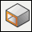
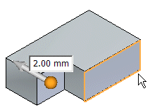
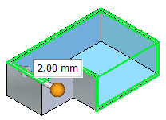
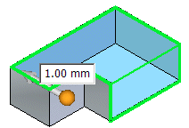
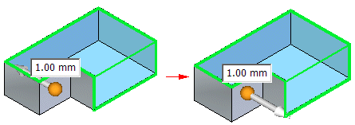
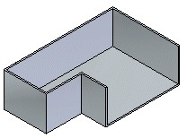
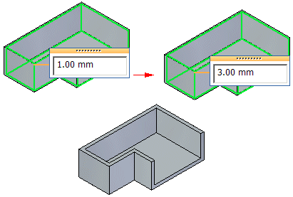

Construct a synchronous thin wall solid
-
Choose Home tab→Solids group→Thin Wall

. -
Click any faces you want to leave open.

When you click a face, the window dynamically updates to display the thin wall.

Note:You can use the
 button on the Thin Wall command bar to exclude faces from the thin wall. To exclude
a face, click the button, and then click the face(s) you want to exclude.
button on the Thin Wall command bar to exclude faces from the thin wall. To exclude
a face, click the button, and then click the face(s) you want to exclude. -
Type in a common thickness for the thin wall.

-
Click the arrow to define the direction for the thin wall.

-
Right-click to finish the feature.

-
You can add faces to an existing thin wall. After creating a thin wall, choose Home tab→Solids group→Thin Wall to display the Thin Wall command bar. On the command bar, click the button, and then click the face you want to include.
-
You can edit the thin wall to make some walls thicker or thinner than the common wall thickness. Click the faces you want to apply the unique thickness to and type a unique thickness value.
